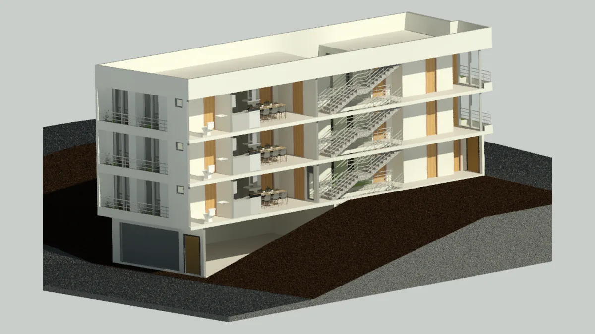
Multifamiliar Alfonso Suárez
Diseño de arquitectura, estructura e instalaciones en LOD 300. Emisión de planos para construcción, metrados y cronograma de obra.

Proyectos
Proyectos propios y otros en los que nuestro equipo ha participado, en distintos roles y etapas del ciclo BIM.

Diseño de arquitectura, estructura e instalaciones en LOD 300. Emisión de planos para construcción, metrados y cronograma de obra.
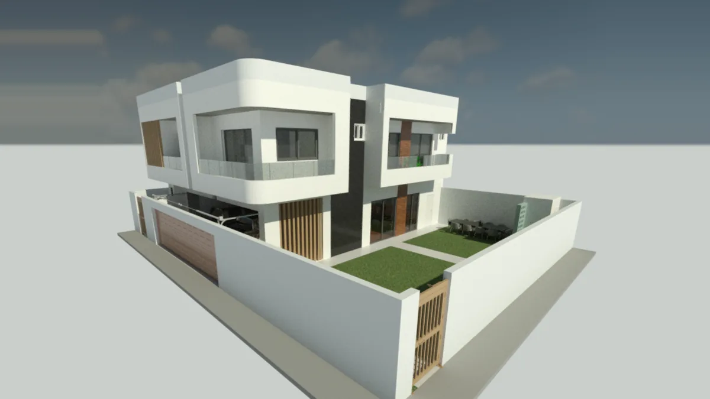
Diseño de arquitectura, estructura e instalaciones en LOD 300. Emisión de planos para construcción, metrados y cronograma de obra.
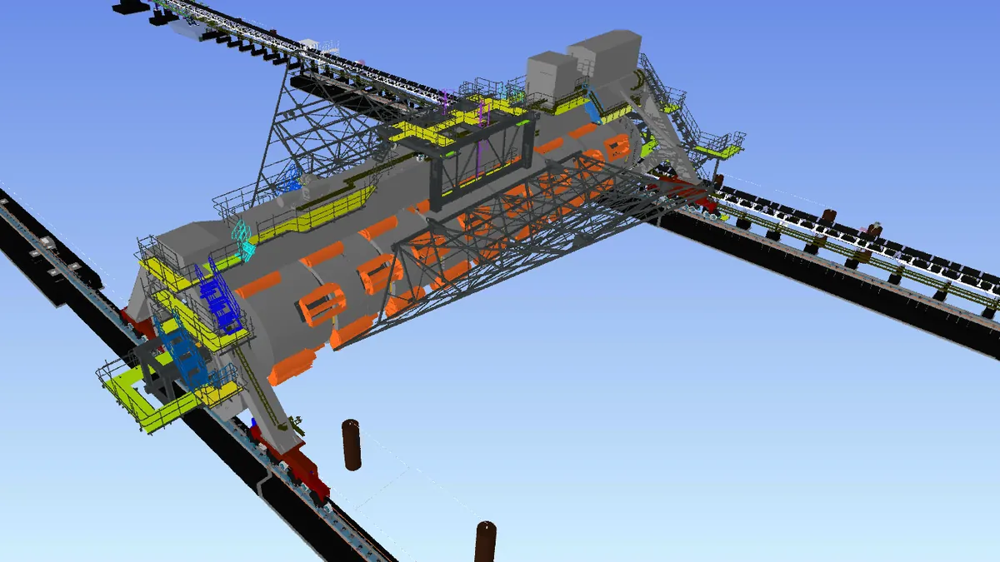
Modelado 3D LOD 500 de planta concentradora y muelle de embarque. Revisión de interferencias, gestión de RFIs, metrados, control de avance BIM y entregables contractuales.
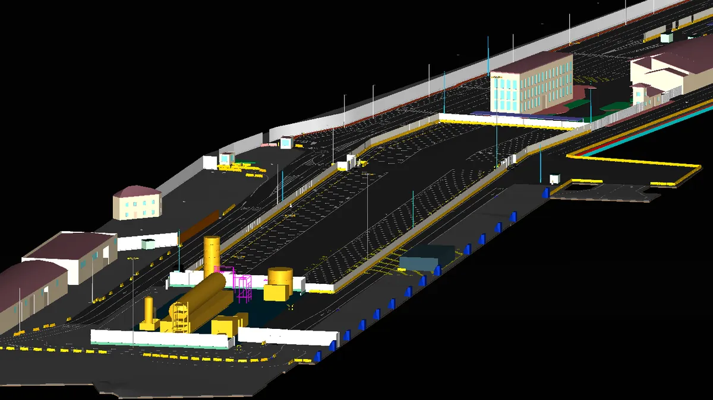
Modelado 3D de terminal portuaria a partir de nube de puntos, con levantamiento del estado existente como base para el diseño.
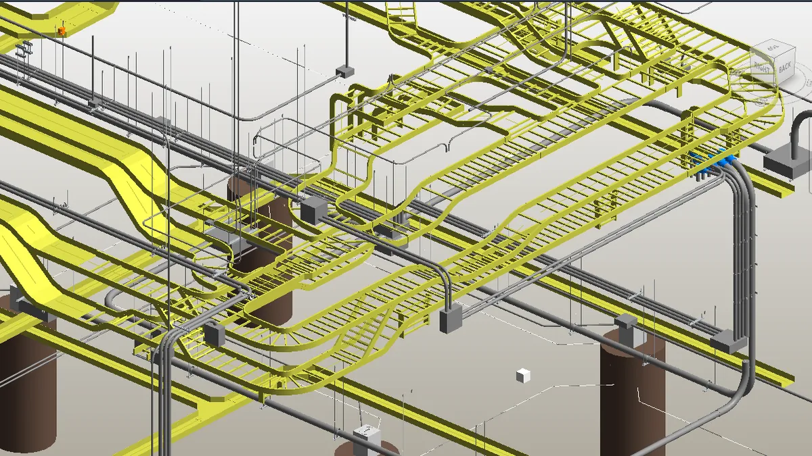
Modelado y coordinación BIM-MEP para infraestructura hospitalaria privada en Lima. Entregables: planos de construcción, modelo Asbuilt, metrados y parámetros COBie.
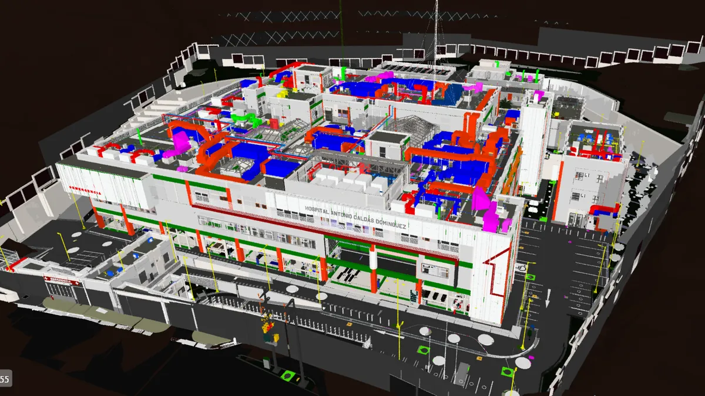
Coordinación BIM-MEP en proyecto de salud de alta complejidad. Gestión de planos de construcción, modelo y planos Asbuilt, metrados y parámetros COBie para operación y mantenimiento.
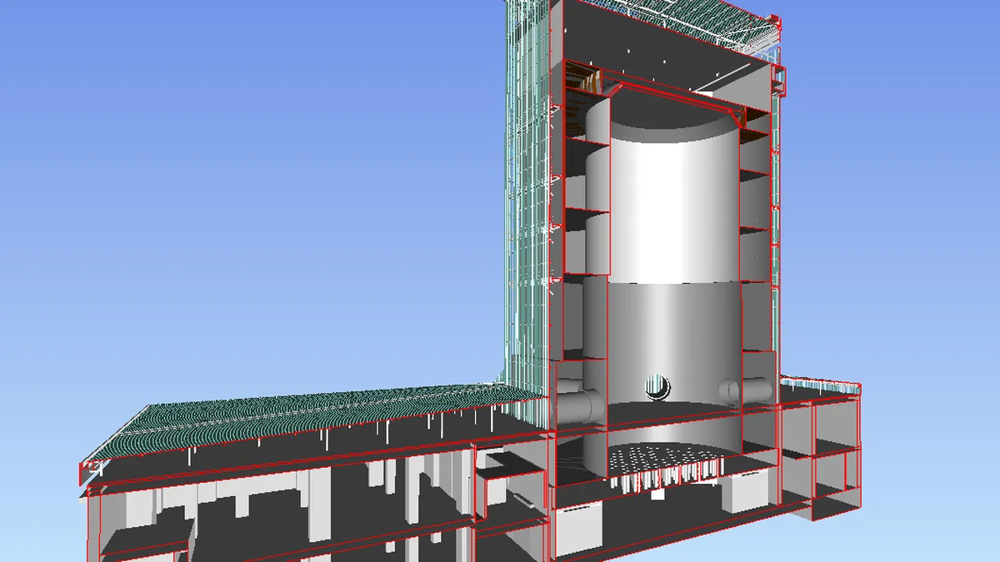
Modelado de edificaciones de la central en latencia, con generación de planos y metrados a partir del modelo.
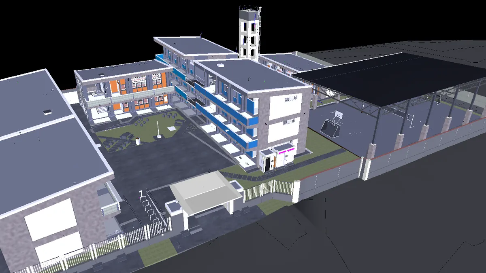
Coordinación BIM general en obra. Control del modelo, gestión de RDIs, reportes de avance 4D y 5D, reuniones ICE para resolución de incompatibilidades y parámetros COBie de mobiliario.
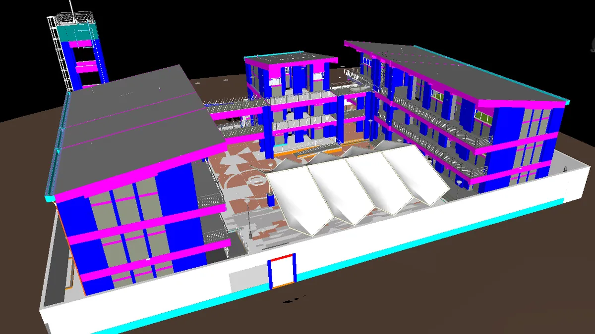
Modelado y coordinación BIM en 5 colegios para el programa ARCC. Modelos Asbuilt LOD 400, planos, metrados, parámetros COBie y coordinación con proyectistas en reuniones ICE.
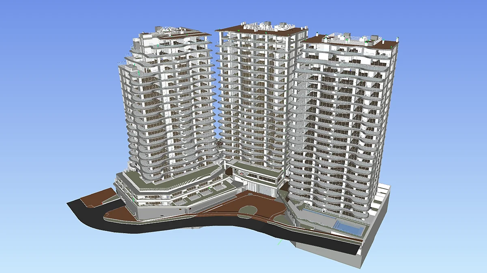
Modelado 3D y coordinación BIM para un edificio multifamiliar de más de 6000 m², integrando arquitectura, estructuras, MEP y topografía en Revit. Detección de interferencias, validación de criterios de diseño y extracción de metrados de movimiento de tierras.
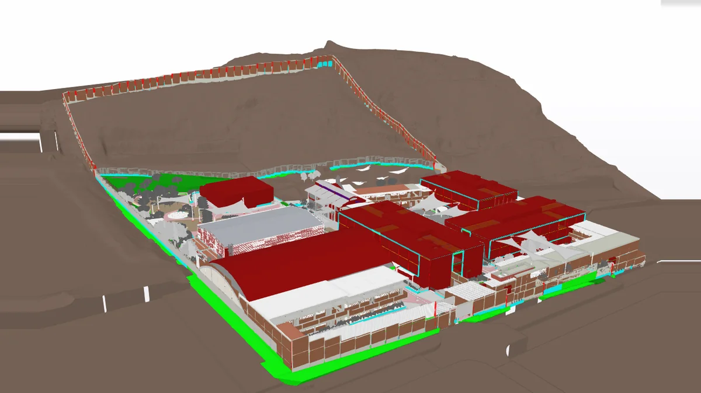
Modelado BIM y movimiento de tierras para el Paquete 5 de Escuelas Bicentenario (ARCC) en Lima, que comprende 9 instituciones educativas. Plataformado y modelado 3D de excavaciones y rellenos en Revit, integrado con Civil 3D para el cálculo y validación de metrados.
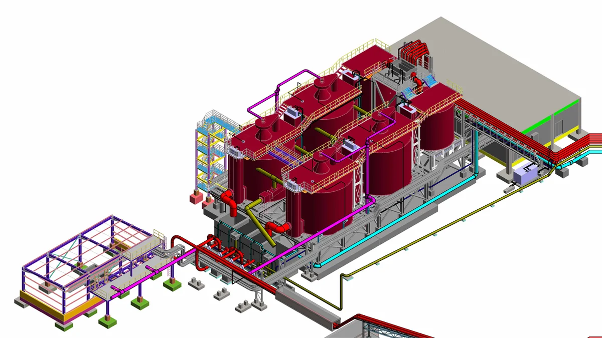
Modelado BIM de una planta de flotación de dos líneas: tuberías de proceso, equipos principales, plataformas y estructuras metálicas. Compatibilización entre disciplinas para la integración del modelo y detección temprana de interferencias.
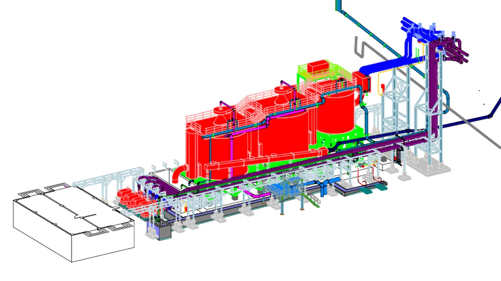
Modelado BIM de una línea de planta de flotación automatizada, con el sistema integral de tuberías de proceso, equipos electromecánicos y estructuras de soporte. Coordinación multidisciplinaria orientada a la constructibilidad.
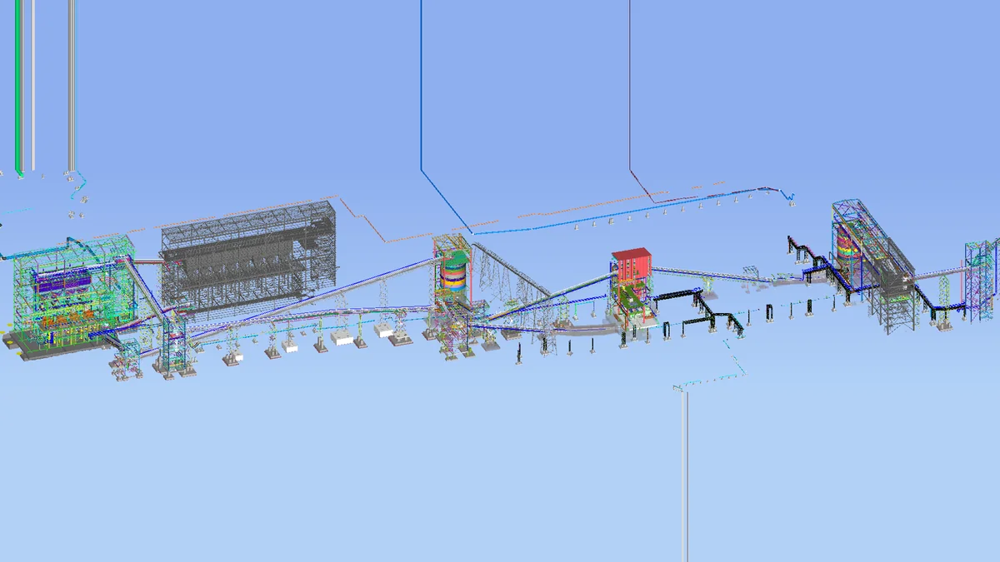
Coordinación del modelo BIM de una planta de beneficio con circuito HPGR: obras civiles, estructuras metálicas, bandejas eléctricas, tuberías y equipos mecánicos. Georreferenciación e integración de los edificios de zarandas, HPGR y silos en un modelo federado para revisión de interferencias.
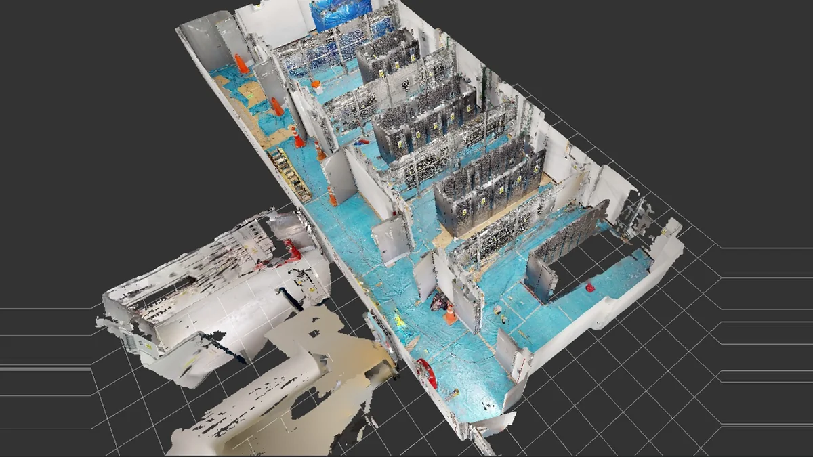
Modelado BIM Asbuilt de salas eléctricas a partir de nube de puntos y ortofotografías, para documentación, operación y mantenimiento de la infraestructura aeroportuaria.
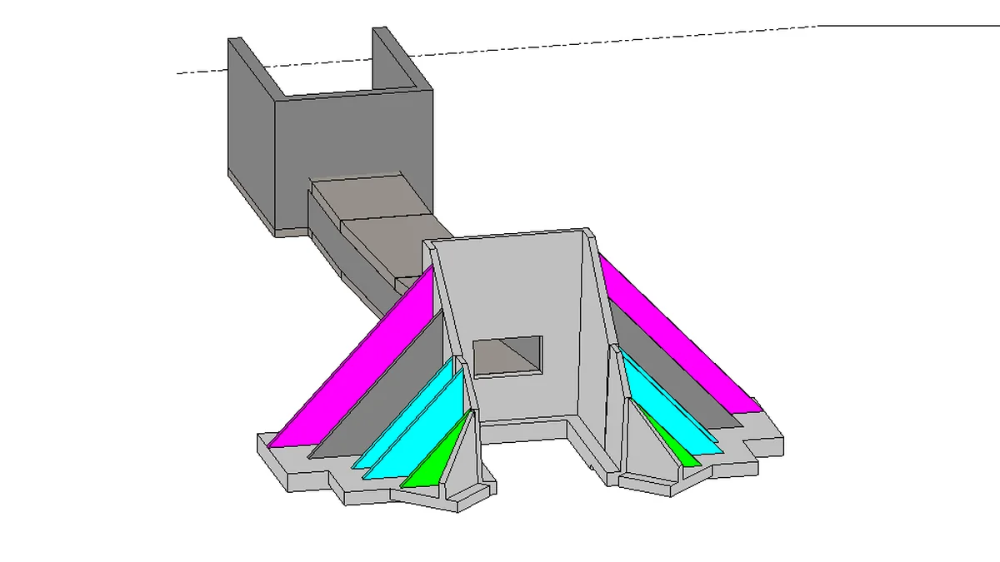
Modelado BIM de un túnel para fajas transportadoras en una operación minera: concreto armado, cimentaciones y componentes estructurales para la integración del sistema de transporte de mineral.
Centro de Innovación Tecnológica. Generación de entregables Asbuilt área MEP con metodología VDC, planos sketch desde Revit para liberación de sectores en obra y parámetros de Facility Management.